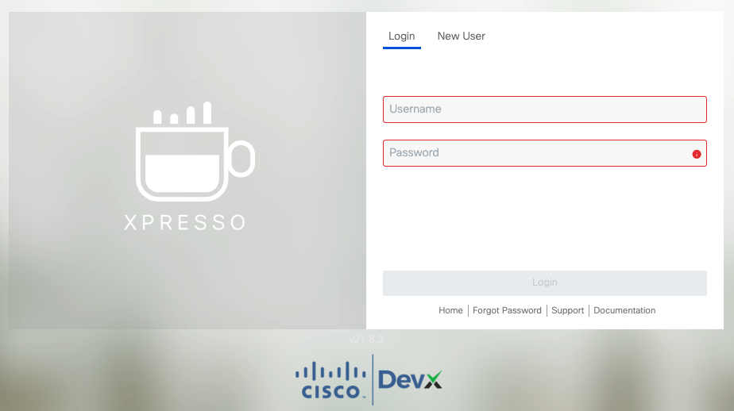
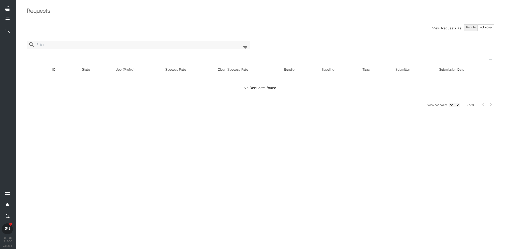
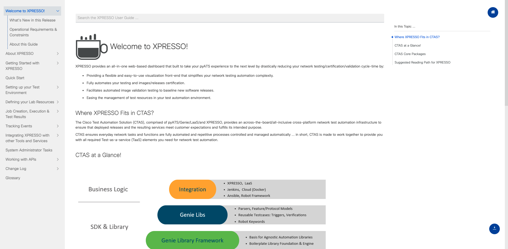

xpresso setup
PC Spec
- 使用しているPCのスペックは以下のとおりです。
- 事前にDockerをinstall しておきます。
omron@Mac-mini-2018 ~ % system_profiler SPHardwareDataType
Hardware:
Hardware Overview:
Model Name: Mac mini
Model Identifier: Macmini8,1
Processor Name: 6-Core Intel Core i7
Processor Speed: 3.2 GHz
Number of Processors: 1
Total Number of Cores: 6
L2 Cache (per Core): 256 KB
L3 Cache: 12 MB
Hyper-Threading Technology: Enabled
Memory: 64 GB
System Firmware Version: 1731.100.130.0.0 (iBridge: 19.16.14243.0.0,0)
OS Loader Version: 540.100.7~23
<<< snip >>>
構築手順
手順は至ってシンプル。
- 作業用ディレクリを作成し、移動
git clone https://github.com/CiscoTestAutomation/xpressoを実行し、リポジトリをクローンする./setup.sh http://<xpresso を立てる server のURL>/docker-composepullを実行docker-compose up -dを実行- ブラウザにて
http://localhostでxpresso にアクセスする
Info
上記手順3にてスクリプトではなく、手動で設定することで構成をカスタマイズすることができます。 詳しくはこちらに記載されています。
Setup log
git clone
omron@Mac-mini-2018 Network % git clone https://github.com/CiscoTestAutomation/xpresso
Cloning into 'xpresso'...
remote: Enumerating objects: 449, done.
remote: Counting objects: 100% (110/110), done.
remote: Compressing objects: 100% (38/38), done.
remote: Total 449 (delta 77), reused 72 (delta 72), pack-reused 339
Receiving objects: 100% (449/449), 119.05 KiB | 7.94 MiB/s, done.
Resolving deltas: 100% (265/265), done.
omron@Mac-mini-2018 Network %
omron@Mac-mini-2018 Network %
omron@Mac-mini-2018 Network % ls -l
total 20
drwxr-xr-x 20 omron staff 640 4 28 09:40 xpresso
omron@Mac-mini-2018 Network %
omron@Mac-mini-2018 Network % cd xpresso
omron@Mac-mini-2018 xpresso % ls -l
total 200
-rw-r--r-- 1 omron staff 11356 4 28 09:40 LICENSE
-rw-r--r-- 1 omron staff 13018 4 28 09:40 README.md
-rw-r--r-- 1 omron staff 6 4 28 09:40 VERSION
drwxr-xr-x 3 omron staff 96 4 28 09:40 assets
-rw-r--r-- 1 omron staff 41490 4 28 09:40 docker-compose.yml
drwxr-xr-x 7 omron staff 224 4 28 09:40 env
drwxr-xr-x 7 omron staff 224 4 28 09:40 etc
-rwxr-xr-x 1 omron staff 1123 4 28 09:40 fallback_to_5.6.sh
drwxr-xr-x 4 omron staff 128 4 28 09:40 initializers
-rwxr-xr-x 1 omron staff 2696 4 28 09:40 migrate202012.sh
-rwxr-xr-x 1 omron staff 2840 4 28 09:40 migrate_to_21.8.sh
drwxr-xr-x 4 omron staff 128 4 28 09:40 migration_scripts
drwxr-xr-x 5 omron staff 160 4 28 09:40 old_configs
-rwxr-xr-x 1 omron staff 1970 4 28 09:40 setup.sh
-rwxr-xr-x 1 omron staff 5224 4 28 09:40 wait-for-it.sh
omron@Mac-mini-2018 xpresso %
omron@Mac-mini-2018 xpresso %
omron@Mac-mini-2018 xpresso %
omron@Mac-mini-2018 xpresso % ./setup.sh http://xpresso.mac-mini-2018.com/
-e ADVERTISED_URL: http://xpresso.mac-mini-2018.com/
Do you wish to continue? y
sed: 1: "./.env": invalid command code .
Creating data and logs directory
chmod: -R: No such file or directory
chmod: -R: No such file or directory
-e Warning:
-e Elasticsearch uses a mmapfs directory by default to store its indices. The default operating system limits on mmap counts is likely to be too low, which may result in out of memory exceptions.
Visit: https://www.elastic.co/guide/en/elasticsearch/reference/master/_maximum_map_count_check.html
-e Writing 'vm.max_map_count=262144' to '/etc/sysctl.conf'
Do you wish to edit /etc/sysctl.conf?
Please answer yes or no.
Do you wish to edit /etc/sysctl.conf?
Please answer yes or no.
Do you wish to edit /etc/sysctl.conf?y
sed: 1: "/etc/sysctl.conf": unterminated substitute pattern
./setup.sh: line 55: /etc/sysctl.conf: Permission denied
file written
-e Initialization of Setup complete!
-e Bringing up the database....
Creating network "xpresso_default" with the default driver
Pulling database (mysql/mysql-server:8.0.26)...
8.0.26: Pulling from mysql/mysql-server
8969f19fb2cc: Pull complete
18ff34a960f0: Pull complete
1059844cbb8f: Pull complete
3bd4cb0b78d1: Pull complete
901b41fa66ef: Pull complete
b33be9f4a1f3: Pull complete
38b3da6a86f7: Pull complete
Digest: sha256:5241f7de0483a70f5856da995fea98904cfce8f1c51734b7f3836c1663eead17
Status: Downloaded newer image for mysql/mysql-server:8.0.26
Pulling cache (redis:3.2)...
3.2: Pulling from library/redis
f17d81b4b692: Pull complete
b32474098757: Pull complete
8980cabe8bc2: Pull complete
58af19693e78: Pull complete
a977782cf22d: Pull complete
9c1e268980b7: Pull complete
Digest: sha256:7b0a40301bc1567205e6461c5bf94c38e1e1ad0169709e49132cafc47f6b51f3
Status: Downloaded newer image for redis:3.2
Pulling elasticsearch (docker.elastic.co/elasticsearch/elasticsearch:7.6.0)...
7.6.0: Pulling from elasticsearch/elasticsearch
c808caf183b6: Pull complete
efa872b6c649: Pull complete
04bbdabaaea4: Pull complete
16f3820abf43: Pull complete
4670c08b6efd: Pull complete
2a396610da0f: Pull complete
6667d6a1f511: Pull complete
Digest: sha256:fb37d2e15d897b32bef18fed6050279f68a76d8c4ea54c75e37ecdbe7ca10b4b
Status: Downloaded newer image for docker.elastic.co/elasticsearch/elasticsearch:7.6.0
Creating xpresso_cache_1 ... done
Creating xpresso_elasticsearch_1 ... done
Creating xpresso_database_1 ... done
-e Bringing up the management service....
Pulling management (ciscotestautomation/pyats-web-management:v21.8)...
v21.8: Pulling from ciscotestautomation/pyats-web-management
955615a668ce: Pull complete
2756ef5f69a5: Pull complete
911ea9f2bd51: Pull complete
27b0a22ee906: Pull complete
8584d51a9262: Pull complete
524774b7d363: Pull complete
9460f6b75036: Pull complete
9bc548096c18: Pull complete
1d87379b86b8: Pull complete
78f1b4c7e490: Pull complete
c03b122696bc: Pull complete
4ce8cd596e39: Pull complete
21dad041825f: Pull complete
894a7f5be21a: Pull complete
e38d7b2ce07d: Pull complete
7f0f61171e81: Pull complete
51e048e00414: Pull complete
00ad2785d16a: Pull complete
4599e20f1f95: Pull complete
5ea2b1cf8112: Pull complete
c076457909e3: Pull complete
Digest: sha256:51eeb75cd42ded2d4da495d99ecbe0e0ff882ac230dc66121e22681f2bc58a6c
Status: Downloaded newer image for ciscotestautomation/pyats-web-management:v21.8
xpresso_database_1 is up-to-date
xpresso_cache_1 is up-to-date
Creating xpresso_management_1 ... done
-e run: 'docker-compose up -d' to start xpresso.
omron@Mac-mini-2018 xpresso %
docker-compose pull
omron@Mac-mini-2018 xpresso % docker-composepull
zsh: command not found: docker-composepull
omron@Mac-mini-2018 xpresso % docker-compose pull
Pulling database ...
Pulling cache ...
Pulling elasticsearch ...
Pulling management ...
Pulling copyservice ... extracting (7.8%)
Pulling sessions ... done
Pulling copyservice ... done
Pulling users ... done
Pulling users-celery ... done
Pulling users-beat ... done
Pulling groups ... done
Pulling groups-celery ... done
Pulling groups-beat ... done
Pulling resources ... done
Pulling communications ... done
Pulling history ... done
Pulling qmgr ... done
Pulling qmgr-celery ... done
Pulling qmgr-beat ... done
Pulling topoman ... done
Pulling topoman-celery ... done
Pulling topoman-beat ... done
Pulling laas ... done
Pulling laas-celery ... done
Pulling laas-beat ... done
Pulling results ... done
Pulling results-celery ... done
Pulling results-beat ... done
Pulling results2 ... done
Pulling jenkinsengine ... done
Pulling jenkinsengine-celery ... done
Pulling jenkinsengine-beat ... done
Pulling requests ... done
Pulling requests-celery ... done
Pulling requests-beat ... done
Pulling labvpn ... done
Pulling cdets ... done
Pulling cdets-celery ... done
Pulling cdets-beat ... done
Pulling genie ... done
Pulling registry ... done
Pulling registry-celery ... done
Pulling genie-celery ... done
Pulling genie-beat ... done
Pulling plugins ... done
Pulling gateway ... done
Pulling aggregator ... done
Pulling aggregator-beat ... done
Pulling aggregator-celery ... done
Pulling wsgateway ... done
Pulling workers ... done
Pulling controller ... done
Pulling client ... done
docker-compose up
omron@Mac-mini-2018 xpresso % docker-compose up -d
xpresso_database_1 is up-to-date
xpresso_cache_1 is up-to-date
xpresso_elasticsearch_1 is up-to-date
xpresso_management_1 is up-to-date
Creating xpresso_wsgateway_1 ... done
Creating xpresso_auths_1 ... done
Creating xpresso_resources_1 ... done
Creating xpresso_plugins_1 ... done
Creating xpresso_jenkinsengine_1 ... done
Creating xpresso_laas_1 ... done
Creating xpresso_results_1 ... done
Creating xpresso_communications_1 ... done
Creating xpresso_genie_1 ... done
Creating xpresso_results2_1 ... done
Creating xpresso_sessions_1 ... done
Creating xpresso_users_1 ... done
Creating xpresso_history_1 ... done
Creating xpresso_labvpn_1 ... done
Creating xpresso_qmgr_1 ... done
Creating xpresso_topoman_1 ... done
Creating xpresso_copyservice_1 ... done
Creating xpresso_cdets_1 ... done
Creating xpresso_groups_1 ... done
Creating xpresso_requests_1 ... done
Creating xpresso_topoman-beat_1 ... done
Creating xpresso_topoman-celery_1 ... done
Creating xpresso_qmgr-celery_1 ... done
Creating xpresso_qmgr-beat_1 ... done
Creating xpresso_workers_1 ... done
Creating xpresso_controller_1 ... done
Creating xpresso_results-celery_1 ... done
Creating xpresso_results-beat_1 ... done
Creating xpresso_laas-celery_1 ... done
Creating xpresso_laas-beat_1 ... done
Creating xpresso_jenkinsengine-beat_1 ... done
Creating xpresso_jenkinsengine-celery_1 ... done
Creating xpresso_requests-beat_1 ... done
Creating xpresso_requests-celery_1 ... done
Creating xpresso_groups-celery_1 ... done
Creating xpresso_cdets-beat_1 ... done
Creating xpresso_groups-beat_1 ... done
Creating xpresso_cdets-celery_1 ... done
Creating xpresso_users-celery_1 ... done
Creating xpresso_users-beat_1 ... done
Creating xpresso_gateway_1 ... done
Creating xpresso_genie-celery_1 ... done
Creating xpresso_registry_1 ... done
Creating xpresso_genie-beat_1 ... done
Creating xpresso_client_1 ... done
Creating xpresso_aggregator_1 ... done
Creating xpresso_registry-celery_1 ... done
Creating xpresso_aggregator-celery_1 ... done
Creating xpresso_aggregator-beat_1 ... done
omron@Mac-mini-2018 xpresso %
Success
上記が完了するとウェブブラウザでhttp://localhost/と入力すると以下の画面が表示されます。
- Try xpresso をクリックしlogin 画面に移行します。 
Info
初期 username/password は、 admin/admin
- login 後は以下のようなDashbord が表示されます。 
Info
初回ログイン時はWelcome page が表示されますので、その際は再度ログインしてみてください。 
起動確認
omron@Mac-mini-2018 xpresso % docker ps
CONTAINER ID IMAGE COMMAND CREATED STATUS PORTS NAMES
1831a4edbb88 ciscotestautomation/pyats-web-management:v21.8 "/s3/entrypoint.sh" 11 minutes ago Up 11 minutes (healthy) 8000/tcp xpresso_management_1
207e55447998 mysql/mysql-server:8.0.26 "/entrypoint.sh mysq…" 12 minutes ago Up 12 minutes (healthy) 3306/tcp, 33060-33061/tcp xpresso_database_1
70d890653a0a docker.elastic.co/elasticsearch/elasticsearch:7.6.0 "/usr/local/bin/dock…" 12 minutes ago Up 12 minutes 9200/tcp, 9300/tcp xpresso_elasticsearch_1
efeda3d9736c redis:3.2 "docker-entrypoint.s…" 12 minutes ago Up 12 minutes 6379/tcp xpresso_cache_1
Last update:
2022/08/27 14:58